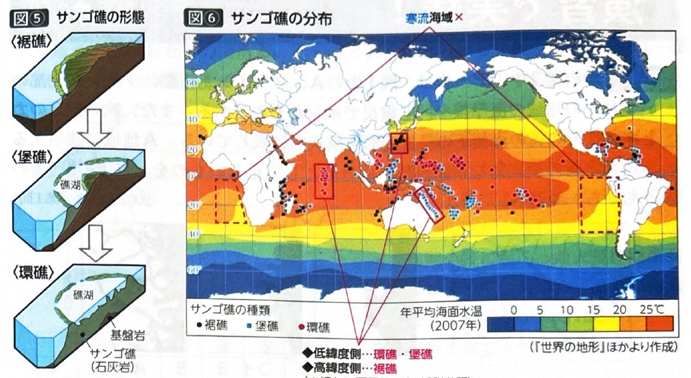

第1章 地形・地形図 - 海岸地形
ポイント総復習
1. 海岸地形の成因（沈水と離水）
海岸地形は、陸地の沈降や海面上昇によって陸が海に沈む「沈水」と、陸地の隆起や海面低下によって陸が海から離れる「離水」によって形成されます。
※氷河期（寒冷期で海面低下）と間氷期（温暖期で氷が溶け海面上昇）の繰り返しによる「氷河性海面変動」も沈水・離水の大きな要因です。
2. 沈水海岸
谷や河口が海に沈むことで形成され、一般に海岸線が複雑になります。湾内は波が穏やかなため、良港になりやすく漁業・養殖業に適しています。
| 地形名 | 沈水したもの | 特徴・代表例 |
|---|---|---|
| リアス海岸 | 河川侵食による V字谷 |
岬と入江が交互に連続する鋸歯（きょし）状の海岸線。 例：スペイン北西部、三陸海岸 |
| フィヨルド | 氷河侵食による U字谷 |
奥深く、水深が大きい入江。リアスより圧倒的に規模が大きい。 例：ノルウェー西岸、チリ南部、NZ南島 |
| エスチュアリー （三角江） |
大河川の 河口部 |
ラッパ状に開いた入江。水深が深く平野も広いため、大都市や大規模港湾が発達しやすい。 例：テムズ川（ロンドン）、セーヌ川（パリ周辺）、ラプラタ川 |
※注意：「デルタ（三角州）」は土砂が堆積した陸地ですが、「エスチュアリー（三角江）」は沈水してできた入江（海）です。

3. 離水海岸と沿岸流による地形
- 海岸平野：平坦な浅海底が離水してできた平野。砂浜海岸（海水浴場）や、風で砂が堆積した海岸砂丘、微高地の浜堤などがみられます。
- 海岸段丘：波に削られてできた海食崖と海食台が離水してできた階段状の地形。
また、海岸線に平行な海流（沿岸流）によって運ばれた砂が堆積して、以下のような地形が造られます。
- 砂嘴（さし）：鳥のくちばしのように湾曲して海に突き出た砂の堆積地形。
- 砂州（さす）：対岸に向かってまっすぐ伸びた砂の堆積地形。
- ラグーン（潟湖）：砂州によって海から切り離されてできた湖。
- 陸繋島（りくけいとう）：砂州（陸繋砂州 / トンボロ）が伸びて、沖合の島が本土と繋がったもの。

4. サンゴ礁
暖かく澄んだ浅海に生息する造礁サンゴ（石灰質）の骨格が積み重なった岩礁です。
陸地の沈降（または海面上昇）に伴い、裾礁（きょしょう） → 堡礁（ほしょう） → 環礁（かんしょう） の順に発達します。
- 分布の条件：暖かく澄んだ海域であること。そのため、寒流が流れる海域や、河川水が流れ込み水が濁る大河の河口付近には発達しません。
- 地球規模で見ると、赤道付近には発達が進んだ環礁・堡礁（例：グレートバリアリーフ）が多く、高緯度側には初期段階の裾礁（例：日本の南西諸島）が多い傾向があります。

基礎問題（理解度チェック）
Q1. 海岸地形の成因について、空欄を埋めなさい。
陸地の沈降や海面の上昇によって陸地が海に沈むことを
といい、逆に陸地の隆起や海面の低下によって陸地が海から離れることを
という。河川侵食によって削られた
が沈むと鋸歯状のリアス海岸となり、氷河によって削られた
が沈むと奥深いフィヨルドとなる。
Q2. 沿岸流によって形成される地形について、空欄を埋めなさい。
沿岸流によって運ばれた砂が、鳥のくちばしのように湾曲して海に突き出て堆積した地形を
といい、入江の対岸に向かってまっすぐ伸びたものを
という。また、これによって海から切り離されてできた湖を
という。
Q3. サンゴ礁の発達と分布について、空欄を埋めなさい。
サンゴ礁は陸地の沈降等に伴って、海岸を縁取る初期段階の
から、沖合に防波堤のように広がる
へと変化し、最終的に中央の島が沈み円環状の
となる。サンゴ礁は暖かく澄んだ海域に発達するため、
が流れる海域や、濁った大河の河口付近では発達しない。
Q4. 「エスチュアリー（三角江）」と「デルタ（三角州）」はどちらも大河川の河口部にみられるが、エスチュアリーは河口部が沈水してできたラッパ状の「入江（海）」であり、大規模な港湾都市が発達しやすい。一方、デルタは土砂が堆積してできた「陸地」である。
Q5. 沈水海岸であるフィヨルドは、氷河によって削られたU字谷が沈水して形成されるため、リアス海岸（V字谷の沈水）に比べて水深が浅く、奥行きも短い小規模な入江になることが多い。